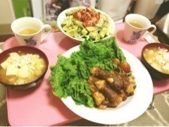

| 2012/10 13 Sat | 259回目*marika |
いつも読んでくださってる方
初めて読んでくださった方
コメントしてくださった方
ありがとうございます♪
今日明日、パパママ兄は
おばあちゃん家に。
私は一人でお留守番

ではなく！
ねね家でお泊まり

一泊して明日握手会
 ‼
‼
‼
部屋でごろごろしてたら
ねねが寝てしまいました。
いっつも目が開いてる

約束の
伊藤ちゃんずで...
作ったよーじゃーん

じゃがいもと豆腐のみそ汁
豆腐の肉巻き
アボカドサラダ
ね？すごいでしょ？
もうね、私が男だったから
ねねを彼女にしたいよ。
料理教えてもらったよ

ねねすごい
すごいテキパキしてるの。

一緒に料理したのすごく
楽しかったから
ずっとにこにこしてたら
「何にやにやしてるん笑」
てツッコまれた
 ぐは
ぐは
ぐは
ねねの作った肉巻き
めっっっちゃおいしかったあ

あのね！サラダは私が作ったんだよ！
私の家にあったアボカドを
持ってきて作った笑
ねねからおいしい いただきました

＼やればできる子
 ／
／
／
***
明日は幕張で全握！
練習だよ！↓
まりっかは～？
みなさん＼～～！／
みなさんならコメントでも
言ってくれるはず
 (じー...)
(じー...)
(じー...)
これ、忘れないでねっ
まりか
コメント(237)
2012/10/13 22:54